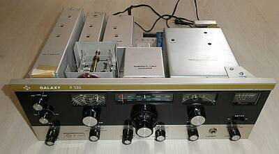 |
フロントパネル側よりシャーシ上面を見る
巾４３０ｍｍと、結構大型です
そして、構成がユニット化されている様子が分かります |
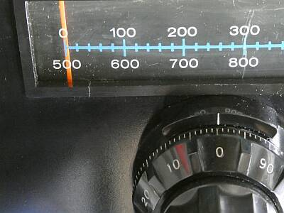 |
アナログ方式で、１KHｚ直読 誤差±１ＫＨｚという仕様
そのメインダイヤルです
一番外側のカーソルを動かして校正します
もっと大きな表示/ダイヤルにすれば良いと思いますが、なぜか小型のものを採用してあります
真ん中のスケールダイヤルを持って回せば、高速で？周波数移動できます（1回転１００ＫＨｚ）
メインダイヤル（ノブ）は、１／６に減速してあります
YAESU FT-101Sイメージです |
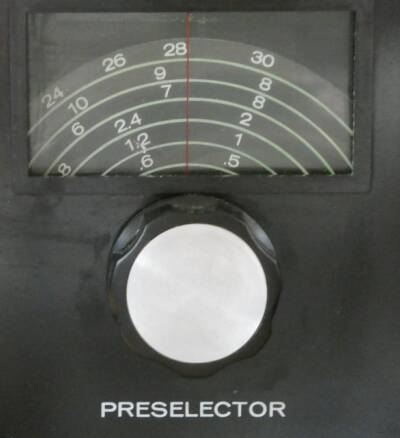 |
パネルに３つある窓の左側の窓
プリセレクタダイヤルです
５００KHｚから３０ＭＨｚの間を６バンドでカバーします
なかなかシャープな選択度です
ある面アバウトな周波数ダイヤルによるバンドの選択時に、このプリセレクターでノイズ最大点を探すことで、どこのバンドに合っているかが分かります
本機の現状・・・上限が３０ＭＨｚ帯まで伸びず、展開範囲が異なる＝周波数ダイヤルの表示と一致しませんから、このプリセレクタの周波数表示は、下段の周波数ダイヤルの代わりになります
表示は、バンド；４－８ＭＨｚレンジ
７．１５０ＭＨｚの最大感度が得られる位置です |
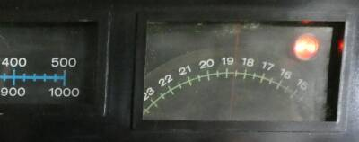 |
この周波数ダイヤルにある赤ランプが消えないと正しくＬｏｃｋされたことになりません
Ｎａｔｉｏｎａｌ ＨＲＯ-５００ と全く同じバンド選択方法です
周波数ダイヤルを回して、目的のバンド近辺で、このランプが消えるところを探すことになります
５００ＫＨｚ毎のマーカーの用意もあります（ＣＡＬ） |
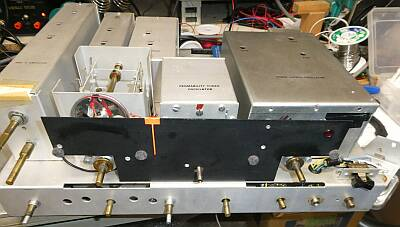 |
シンセサイザの調整を試みるために、ここまで分解せざるを得ない羽目に
ここまでバラせば、お掃除はしっかりできます・・・
右端の大きなサブケースが、目的のシンセサイザ部です |
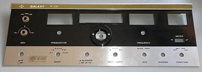 |
取り外したフロントパネルです
ＶＦＯ（メインダイヤル）部のダイヤル分解は難しかった・・・他人の考えた仕組みは分かりませんが、分かってしまえば、コロンブスのなんとかです
目盛りやカーソルの描かれた透明のシートですが、ここまでの接着の跡ほか、経年変化も含めダメージが大です |
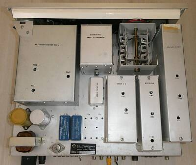 |
整然としたシャーシ上面です
電源部は非常にコンパクトというかほかに比べて貧弱に見えます
そのパワートランジスタの上にフィルタ部があります
左の一番大きなサブケースは、シンセサイザ部
中央は、ＶＦＯ（ＰＴＯ/スラグチューン方式です）
ＶＦＯの下は、ＤＢＭ部、その右がＨＦ-ＭＩＸ部
右端は、９ＭＨｚ-IF部、その左はPRI-ＭＩＸ部 |
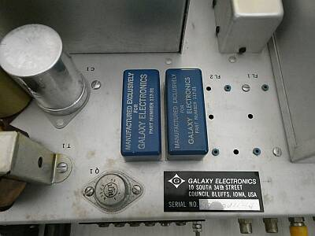 |
左からＡＭ用、ＳＳＢ用で、ＡＭ用はオプションで追加されたもの
本来、ＳＳＢ用の隣はＲＴＴＹ用に１．５ＫＨｚ巾のもの、そして一番右端にはCW用の５００Hzフィルタが収まりますが、本機ではCWフィルタはシャーシ下側に６００HZのフィルタが装着されていました（後述） |
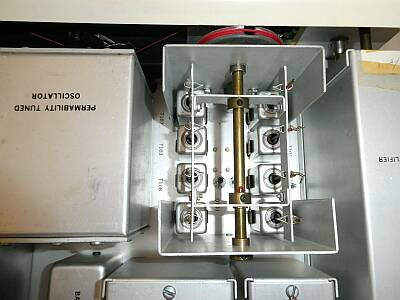 |
シャーシ上 ＲＦプリセレクタ部
左に見えるＶＦＯと同様に、μ同調方式が採用されています
見づらいですが、中央のシャフトを挟んだ下にＲＦ初段Ｔｒが２個、ソケットに刺さっています
カスケード増幅回路が採用されています
この特性というか選択度の鋭さで、今どこの周波数を受信しているかはすぐに想像がつきます |
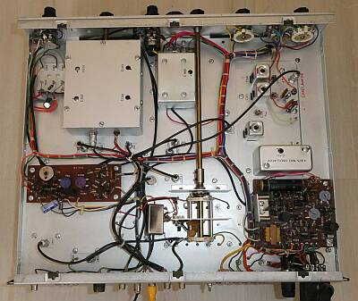 |
シャーシ下の様子
右下の基板は、電源とオーディオ関係
その上にシンセサイザユニットが別ケースに収まって取り付いています
中央のシャフトは、ＩＦフィルタ切替のもの
左中央の基板は、AGC/メーター関係
その上のサブケースは、ＲＦチューン（プリセレクタ）部 |
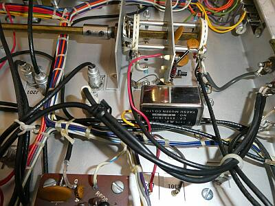 |
９MHz帯のクリスタルフィルタ装着部の真下
フィルタ切替ＳＷ部です
前オーナーの手で、YAESU ＦＴ-３０１用９MHｚ帯ＣＷフィルタが装備されています
これで、ＡＭ用６ＫＨｚ巾、ＳＳＢ用２．４ＫＨｚ巾に加え、ＣＷ用６００Ｈｚフィルタ装備です |
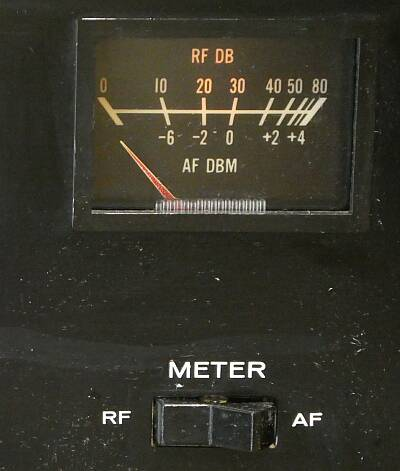 |
このクラスの受信機によくあるパターン
メーターの機能に、信号強度以外に６００Ωライン出力のレベル表示ができるようになっています
信号強度スケールは、ＤＢです |
|
古いギアですし、前オーナーの手も入っていますので、細かい点では色々問題を起こしていました
・電源
２回漏電ブレーカーが落ちました
モードＳＷでＯＮ－ＯＦＦできるはずの電源制御ができません
電源トランス一次側に入っているコンデンサが焼け焦げています
どう見ても変な電源コネクタ配線です（１２Ｐ角型ジョンソンコネクタを使って、ＡＣ１１５／２３０Ｖ，ＤＣ１８Ｖ運用ができるようになっている）
回路図にあるオリジナルの配線にすることで、モードＳＷの動作も正常になりましたし、漏電ブレーカーが落ちることもなくなりました
・ＢＦＯ
フロントパネルに微調用VCの用意（±１ＫＨｚ可変）があるのですが、USB側 基板からここに配線するハトメの半田が割れていました、当然目的のfにはなりません
改めてf調整しました
・IFTトランスの調整
基板の取り付けビスの緩みや調整などにより、ＢＦＯ信号のＡＧＣへの回り込みが発生
単純にIFT調整（ゲイン最大点を求める調整）を行ったところ、モード切替をＬＳＢ／ＵＳＢにするとＳメーターが大きく振れる現象が著しい状態が生じていました
取付ビスをしっかり締めこんで、ＩＦＴの調整・・・・ゲイン最大点（Ｓメータ最大点）ではなく、検波出力最大点に調整することで問題解決となりました |
|
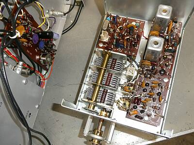 |
こちらが、今回一番の問題であるシンセサイザ部（フェーズロックオシレータ部）
サブケースを、ここまで取り出すのが大変だったし、ここから調整も大変そう
ここに見えている位相検出に向けたトランス２個（Ｔ７０２/７０３）の調整はシビアでした
小型真四角な基板に見えているクリスタルは、５００ＫＨｚのものです |
|
シンセサイザ部（フェーズロックオシレータ部）の調整について |